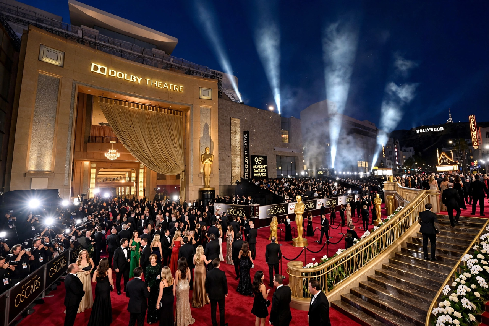

| Dolby Theatre | |
|---|---|
| Former name | Kodak Theatre (2001–2012) |
| Address | 6801 Hollywood Boulevard, Hollywood, Los Angeles, California |
| Opened | 9 November 2001 |
| Architect | David Rockwell (Rockwell Group) |
| Capacity | 3,400 |
| Known for | Academy Awards ceremonies |
The Dolby Theatre (formerly the Kodak Theatre) is a live-performance auditorium in the Ovation Hollywood shopping mall and entertainment complex, on Hollywood Boulevard and Highland Avenue, in the Hollywood neighbourhood of Los Angeles, California. Since its opening on November 9, 2001, it has been the venue of the annual Academy Awards ceremony.
The theatre was designed by David Rockwell of the Rockwell Group specifically with the Oscar ceremonies in mind. The Academy of Motion Picture Arts and Sciences sought a permanent home for the awards, which had previously rotated among venues including the Shrine Auditorium and the Dorothy Chandler Pavilion. Eastman Kodak paid $75 million for the naming rights, and the theatre opened as the Kodak Theatre.
In February 2012, Kodak — then in bankruptcy — ended its sponsorship early. After a brief period as the Hollywood and Highland Center Theatre, Dolby Laboratories signed a 20-year naming-rights agreement in May 2012, and the venue became the Dolby Theatre, upgraded with Dolby Atmos sound. The Academy's lease runs through 2033.
The theatre seats 3,400 (about 3,332 in its Oscars configuration, one of the largest stages in the United States) and features a grand spiral staircase, cherrywood interiors, and an art-deco-inspired design with pillars displaying the names of Best Picture winners since 1927–28, with blank spaces reserved for future winners through the 21st century. Outside the auditorium, columns in the mall's portal display additional winning titles. The venue also hosts concerts, the America's Got Talent live shows, the ESPY Awards, and premieres.
Hollywood Walk of Fame · Grauman's Chinese Theatre · Academy Awards